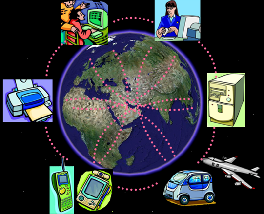
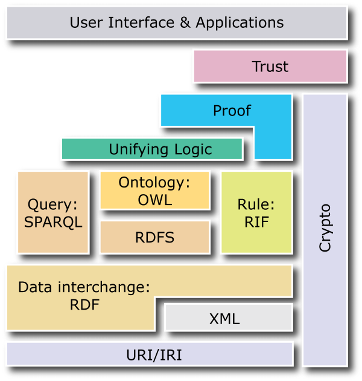
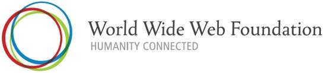
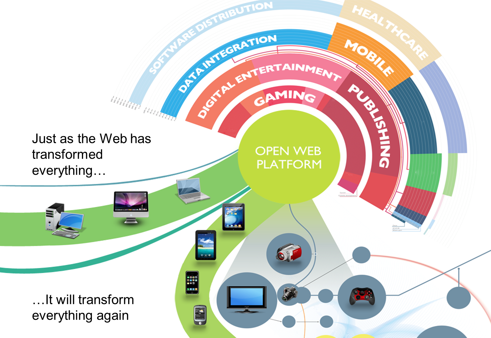
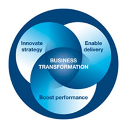

Ringraziamenti
- Questa presentazione utilizza anche materiale
proveniente da:
- presentazioni tenute da Steve Brattt
- presentazioni tenute da Jeff Jaffe
- presentazioni tenute da Bernard Gidon
- presentazioni e articoli di Tim Berners-Lee
- Il materiale di questa presentazione può
essere riutilizzato nel rispetto delle leggi sul
copyright e delle regole del W3C
Contenuto
- One Web
- Gli aspetti sociali
- W3F
- WAI
- Web 2.0 e Web 3.0
- La visione del W3C: Open Web Platform
- Long Live the Web…
L'evoluzione del Web

- Da un Web di:
- linked documents
- creatori & consumatori
- …a One Web
- of Linked Data
- on Everything
- for Everyone
Le stesse informazioni devono essere disponibili
per tutti gli utenti, indipendentemente da
chi siano, dove si trovino, quale
sistema usino, o da quale modalità
di connessione usino
One Web is…
The same information is available to all users,
regardless of who they are, where they are, what system
they use, or how they are connected
One Web of Linked Data
Semantic Web

-
Il Semantic Web ...
-
- è un' infrastruttura basata su metadati
per poter svolgere ragionamenti sul Web
-
estende, non sostituisce il web attuale
-
I metadati sono:
-
- Informazioni, elaborabili automaticamente
(machine understandable), relative a una
risorsa web o a qualche altra cosa
- ... data about data
- ... informazioni che possono essere utilizzate da
intelligent software agents per fare un uso
appropriato delle risorse
- ... dati ...
- ... che possono essere descritti da altri
metadati ...
Ne parleremo poi meglio…
One Web: On Everything
…working seamlessly across and between all devices
…accessible via a range of interactions

Tom Cruise in Minority Report Spielberg (2002)
One Web: For Everyone, Connecting & Empowering All
People

The social value of the Web is that it enables
human communication, commerce, and opportunities to share
knowledge [and] to make these benefits available to
all people, whatever their hardware, software,
network infrastructure, native language, culture,
geographical location, or physical or mental ability
Cosa può fare il Web per l'umanità?
-
Qualche numero
-
- Non usano il Web: ~5,000,000,000
- Vivono con un reddito di $1.25/giorno o meno:
~1,400,000,000
- Denutriti: ~920,000,000
- Analfabeti: ~900,000,000
-
Molti altri ostacoli
-
- Assenza di supporto per lingue e caratteri
- Mancanza di supporto per i disabili
- Soluzioni proprietarie vs open standards
- Censura, disciminazione nell'accesso
- Comprendere il funzionamento del Web
- Comprendere come il web può dare maggior
potere alle persone
(dati 2007/2008)
La World Wide Web Foundation

-
http://www.webfoundation.org/
- Advance the Web
- Connect humanity
- Empower people
- “The Web Foundation will break-down the
barriers that now prevent billions of people from
being connected and empowered by the Web, while
advancing future technologies leading toward a
more capable, useful and usable Web for all people on
the planet.”
Il Web e i suoi aspetti sociali
Il Web è uno strumento sociale
“The Web is more a social creation than
a technical one. I designed it for a social effect - to
help people work together - and not as a
technical toy. The ultimate goal of the Web is to
support and improve our weblike existence in
the world.”
(Tim Berners-Lee - Weaving the Web, p. 123)
-
Valore sociale del Web: comunicazione
interpersonale, commercio, condivisione di
conoscenza
- Rendere questi benefici disponibili a tutti,
indipendentemente da hardware, software, infrastruttura
di rete, lingua madre, cultura, posizione geografica,
capacità fisiche o mentali
La Web Accessibility
- Fra i tanti, due principi di base:
- l'interazione deve essere sempre
possibile con una interfaccia di “tipo
tastiera”
(non significa che vada
utilizzata una tastiera)
- l'informazione deve essere sempre
presentabile mediante un'alternativa
testuale
(non significa che vada
preparato un sito testuale parallelo)
-
http://www.w3c.it/education/2012/upra/wai/
Web 2.0

David Simonds, The Economist
-
Pro
-
- Social networking
- User Generated Content (UGC)
- Social tagging e folksonomy
- Emerge automaticamente il vocabolario
preferito dagli utenti
- Basso costo e rapidità di modifica
delle folksonomy
-
Contro
-
- Mantenere viva l'attenzione utente:
- ”Telecommunications bandwidth is not a
problem; human bandwidth is“
- Limiti intrinseci delle folksonomy
- sinonimie, polisemie, term-oriented, …
- Utente “dipendente“ dal sito
- problemi di migrazione, duplicazione del
lavoro
- Frazionamento su più reti
- Legge di Metcalfe: il valore di una rete
è proporzionale al quadrato del numero di
nodi presenti
Web 2.0 o Web Semantico?
-
Web 2.0
-
- livello d'ingresso meno costoso
- orizzonti limitati
-
Web Semantico
-
- investimenti iniziali rilevanti
- potenziale superiore
La visione del W3C: the Open Web Platform

La Open Web Platform è…

- una piattaforma per l'innovazione, il consolidamento
e la riduzione dei costi
- le tecnologie del W3C modellano il futuro della
trasformazione globale del mondo business
Open Web Platform significa…
- Le pagine Web diventano più attraenti,
interattive, intelligenti
-
HTML5 consente l'interoperabilità
cross-browser, e tutti i maggiori produttori di
browser lo supportano
- I contenuti video hanno pieno diritto di
cittadinanza (“first-class citizen”)
- La data integration diventa più
semplice
- I vari dispositivi possono interagire e
diventano interoperabili
- Il social networking è l'asse
portante
- Privacy, security, identity contribuiscono ad
aumentare la fiducia (trust)
Le proprietà della Open Web Platform
- Ubiquità (computer, smartphone, elettronica di
consumo, TV, automobili…)
- Accessibilità and Internazionalizzazione
Attenzione!, l'internazionalizzazione non
è un semplice problema di traduzione, ma un
problema di multiculturalità, e deve
considerare vari
aspetti:
- tecnici: differenze di codifica e di orientamento
del testo
- culturali: diversa percezione di colori, termini,
etc.
- Interoperabilità: funziona nello stesso modo
su tutti i dispositivi
- Controlla le risorse giuste
- Fornisce aglli sviluppatori tecnologie Multi-purpose
Long Live the Web: i principi
- Universality Is the Foundation
- Open Standards Drive Innovation
- Keep the Web separate from Internet
- Electronic Human Rights
- No Snooping
- Linking to the Future
Universality Is the Foundation
-
You can link anything
- The web should be usable by people with
disabilities
- Decentralization: you do not have to get
approved from any central authority, just:
- write a page in HTML
- name with URI
- serve using HTTP
- URI is the key to universality
-
Social networking issues
-
capture information from users
- organize it and provide value-added-service but
only within their sites
-
each site is a silo
- The isolation occurs because each piece of
information does not have a URI
- A related danger is that one
social-networking site —or one search engine or one
browser— gets so big that it becomes a
monopoly, which tends to limit innovation
Open Standards Drive Innovation
- The basic Web technologies that individuals and
companies need to develop powerful services must be
available for free, with no royalties
-
Open standards
- You can build your own Web site or company
without anyone’s approval
- Open, royalty-free standards do not mean
that a company or individual cannot devise a
blog or photo-sharing program and charge you to use
it
- Not using open standards creates closed
worlds
- Apple’s iTunes system, for example,
identifies songs and videos using URIs that
are open
- But instead of “http:” the
addresses begin with “itunes:”
which is proprietary
- You can access an “itunes:” link
only using Apple’s proprietary iTunes
program
Keep the Web separate from Internet
- The separation of layers, partitions the
design of the Web from that of the Internet.
- The Web is an application that runs on the
Internet, which is an electronic network that
transmits packets of information among millions of
computers according to a few open protocols
- The two layers of technology work together but can
advance independently
Electronic Human Rights
- A Web user is also an Internet user and therefore
relies on an Internet that is free from
interference
-
Net neutrality
No Snooping
- Accessing the information within an Internet packet
is equivalent to wiretapping a phone or opening
postal mail
- Free speech should be protected, too.
The Web should be like a white sheet of paper: ready to
be written on, with no control over what is
written
-
Totalitarian governments aren’t the only
ones violating the network rights of their
citizens
- When your network rights are violated, public
outcry is crucial
- In October 2010, Finland made broadband
access, at 1 Mbps, a legal right for all
its citizens.
Linking to the Future
- As long as the web's basic principles are
upheld, its ongoing evolution is not in the
hands of any one person or organization.
If we can preserve the principles, the Web promises
some fantastic future capabilities
-
HTML5 is not just a markup language but a
computing platform that will make Web apps
even more powerful than they are now
-
Wireless access will be a particular boon to
developing countries, where many people do not have
connectivity by wire or cable but do have it wirelessly
- Linked Data (vedi: http://www.w3c.it/talks/2010/smau2010/)
Conclusioni
- Il World Wide Web ha ancora molti margini di
evoluzione (leading the Web to its full
potential)
- Motivazioni tecniche e ideali
- Il W3C guida l' evoluzione del Web, grazie
al contributo dei suoi membri
-
Il Web non
è solo tecnologia, ma…
-
Humanity Connected by Technology…
- …e cosa possono fare la tecnologia e i
collegamenti per dare maggior potere a tutti
- La Open Web Platform è la visione del W3C
- html5 è un componente fondamentale
-
Difendiamo i princìpi del Web, per
assicurarne lo sviluppo e la sopravvivenza!!!


{kind=link}